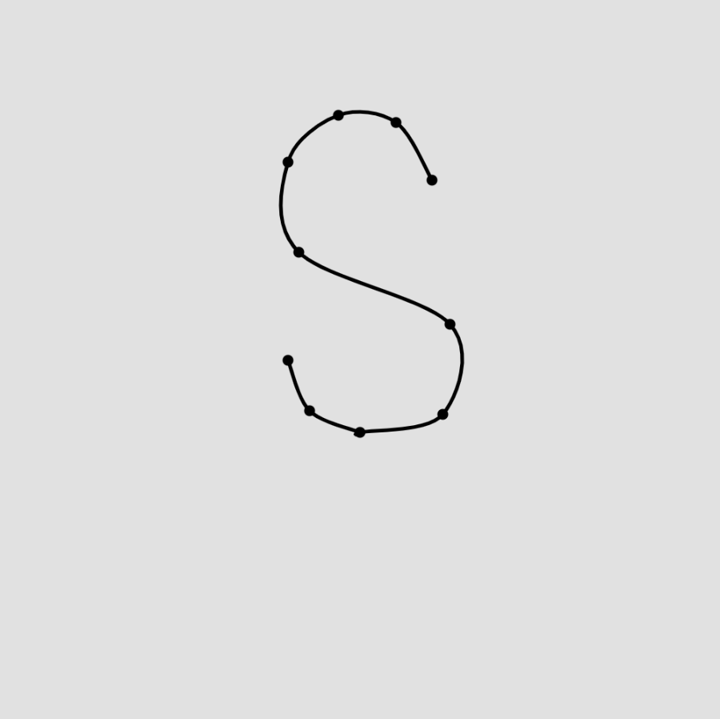

Parametric and Generation is a project about making daily sketches by using only code. The object is to evole or experiment with different medthod of coding to create different artwork daily. The project lasted 21 days and the result were excited.
Day 1
Day 2
Day 3
Day 4
Day 5
Day 6
Day 7
Day 8
Day 9
Day 10
Day 11
Day 12
Day 13
Day 14
Day 15
Day 16
Day 17
Day 18
Day 19
Day 20
Day 21
In this project, spent about 30 minutes to 1 hour to type some codes. I was not very comforble with coding because it is similar to learn another language. Despite so, this project makes me to feel more comforble and able to remember some basic coding. On top of that, I am able to learn how to make arts/drawing straight from coding. The results were vary and that made me spent quite sometime to adjust. This project is more about my experiments and journey to learn new type of codings and not my evolution through days. This explains why some artworks look basic despite it is on the later date. Regardless of the result, I am really happy to do this project and it enhance my coding skill a lot.